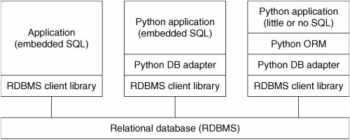

21.1. Introduction21.1.1. Persistent StorageIn any application, there is a need for persistent storage. Generally, there are three basic storage mechanisms: files, a relational database system (RDBMS), or some sort of hybrid, i.e., an API (application programmer interface) that "sits on top of" one of those existing systems, an object relational mapper (ORM), file manager, spreadsheet, configuration file, etc. In an earlier chapter, we discussed persistent storage using both plain file access as well as a Python and DBM overlay on top of files, i.e., *dbm, dbhash/bsddb files, shelve (combination of pickle and DBM), and using their dictionary-like object interface. This chapter will focus on using RDBMSs for the times when files or writing your own system does not suffice for larger projects. 21.1.2. Basic Database Operations and SQLBefore we dig into databases and how to use them with Python, we want to present a quick introduction (or review if you have some experience) to some elementary database concepts and the Structured Query Language (SQL). Underlying StorageDatabases usually have a fundamental persistent storage using the file system, i.e., normal operating system files, special operating system files, and even raw disk partitions. User InterfaceMost database systems provide a command-line tool with which to issue SQL commands or queries. There are also some GUI tools that use the command-line clients or the database client library, giving users a much nicer interface. DatabasesAn RDBMS can usually manage multiple databases, e.g., sales, marketing, customer support, etc., all on the same server (if the RDBMS is server-based; simpler systems are usually not). In the examples we will look at in this chapter, MySQL is an example of a server-based RDBMS because there is a server process running continuously waiting for commands while neither SQLite nor Gadfly have running servers. ComponentsThe table is the storage abstraction for databases. Each row of data will have fields that correspond to database columns. The set of table definitions of columns and data types per table all put together define the database schema. Databases are created and dropped. The same is true for tables. Adding new rows to a database is called inserting, changing existing rows in a table is called updating, and removing existing rows in a table is called deleting. These actions are usually referred to as database commands or operations. Requesting rows from a database with optional criteria is called querying. When you query a database, you can fetch all of the results (rows) at once, or just iterate slowly over each resulting row. Some databases use the concept of a cursor for issuing SQL commands, queries, and grabbing results, either all at once or one row at a time. SQLDatabase commands and queries are given to a database by SQL. Not all databases use SQL, but the majority of relational databases do. Here are some examples of SQL commands. Most databases are configured to be case-insensitive, especially database commands. The accepted style is to use CAPS for database keywords. Most command-line programs require a trailing semicolon ( ; ) to terminate a SQL statement. Creating a Database CREATE DATABASE test;
GRANT ALL ON test.* to user(s);The first line creates a database named "test," and assuming that you are a database administrator, the second line can be used to grant permissions to specific users (or all of them) so that they can perform the database operations below. Using a Database USE test; If you logged into a database system without choosing which database you want to use, this simple statement allows you to specify one with which to perform database operations. Dropping a Database DROP DATABASE test; This simple statement removes all the tables and data from the database and deletes it from the system. Creating a Table
This statement creates a new table with a string column login and a pair of integer fields uid and prid. Dropping a Table DROP TABLE users; This simple statement drops a database table along with all its data. Inserting a Row INSERT INTO users VALUES('leanna', 311, 1);You can insert a new row in a database with the INSERT statement. Specify the table and the values that go into each field. For our example, the string 'leanna' goes into the login field, and 311 and 1 to uid and prid, respectively. Updating a Row UPDATE users SET prid=4 WHERE prid=2; UPDATE users SET prid=1 WHERE uid=311; To change existing table rows, you use the UPDATE statement. Use SET for the columns that are changing and provide any criteria for determining which rows should change. In the first example, all users with a "project ID" or prid of 2 will be moved to project #4. In the second example, we take one user (with a UID of 311) and move them to project #1. Deleting a Row DELETE FROM users WHERE prid=%d; DELETE FROM users; To delete a table row, use the DELETE FROM command, give the table you want to delete rows from, and any optional criteria. Without it, as in the second example, all rows will be deleted. Now that you are up to speed on basic database concepts, it should make following the rest of the chapter and its examples much easier. If you need additional help, there are plenty of database books out in the market that you can check out. 21.1.3. Databases and PythonWe are going to cover the Python database API and look at how to access relational databases from Python, either directly through a database interface, or via an ORM, and how you can accomplish the same task but without necessarily having to give explicitly commands in SQL. Topics such as database principles, concurrency, schema, atomicity, integrity, recovery, proper complex left JOINs, triggers, query optimization, transactions, stored procedures, etc., are all outside the scope of this text, and we will not be discussing these in this chapter other than direct use from a Python application. There are plenty of resources you can refer to for general information. Rather, we will present how to store and retrieve data to/from RDBMSs while playing within a Python framework. You can then decide which is best for your current project or application and be able to study sample code that can get you started instantly. The goal is to get you up to speed as quickly as possible if you need to integrate your Python application with some sort of database system. We are also breaking out of our mode of covering only the "batteries included" features of the Python standard library. While our original goal was to play only in that arena, it has become clear that being able to work with databases is really a core component of everyday application development in the Python world. As a software engineer, you can probably only make it so far in your career without having to learn something about databases: how to use one (command-line and/or GUI interfaces), how to pull data out of one using the Structured Query Language (SQL), perhaps how to add or update information in a database, etc. If Python is your programming tool, then a lot of the hard work has already been done for you as you add database access to your Python universe. We first describe what the Python "DB-API" is, then give examples of database interfaces that conform to this standard. We will give some examples using popular open source relational database management systems (RDBMSs). However, we will not include discussions of open source vs. commercial products, etc. Adapting to those other RDBMS systems should be fairly straightforward. A special mention will be given to Aaron Watters's Gadfly database, a simple RDBMS written completely in Python. The way to access a database from Python is via an adapter. An adapter is basically a Python module that allows you to interface to a relational database's client library, usually in C. It is recommended that all Python adapters conform to the Python DB-SIG's Application Programmer Interface (API). This is the first major topic of this chapter. Figure 21.1 illustrates the layers involved in writing a Python database application, with and without an ORM. As you can see, the DB-API is your interface to the C libraries of the database client. Figure 21-1. Multitiered communication between application and database. The first box is generally a C/C++ program while DB-API compliant adapters let you program applications in Python. ORMs can simplify an application by handling all of the database-specific details. |